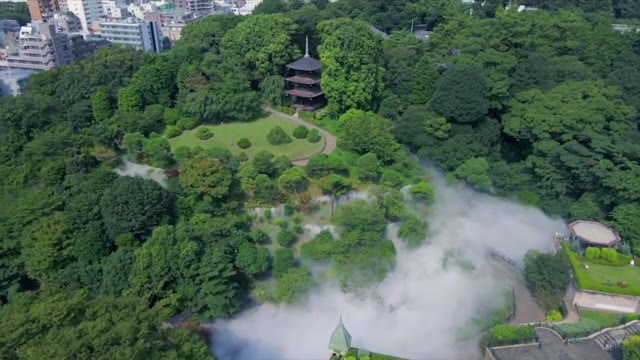

フルムービーを再生する
雲海演出
天候・季節に左右されない、毎日出会える絶景の雲海を。
庭園が一瞬にして別世界へ ―― 旅の目的地になる「雲海庭園」。
ここでしか味わえない雲海を眺めながらの、特別なお食事・ご滞在を。
POINT 1

いつでも狙った時間に演出可能
自然の雲海は運や天候次第ですが、人工雲海システムなら毎朝・毎晩、決まった時間に幻想的な雲海を創り出せます。お食事中の演出や朝の散策時間に合わせて、日本庭園ならではの特別な景観をお届けします。
POINT 2
安定した演出力と映える空間
特殊フィルターで浄化した水と2種類のセラミックノズルにより、噴霧量を細かくコントロール。SNSで拡散されやすい「フォトジェニックな空間」は、施設のブランド価値向上にも貢献します。

POINT 3

超微粒子ミストで涼感スポットに
周辺環境により変動しますが、目安として3度前後の涼しさを実感いただけます。数ミクロン単位の超微粒子で噴霧するため、空間を不快に濡らすことなく来場者の熱中症対策・涼感スポットとして機能します。
高級旅館・日本庭園を持つ料亭様へ
朝夕の限定演出として「雲海を眺めながらのラウンジ体験」をパッケージ化。ナイトウエディングやフォトウエディングの新たな見どころとしても、高価格帯プランの理由付けとなります。

大規模な日本庭園・歴史的施設様へ
建築物や植栽への影響が少ない設計のため、既存の庭園景観を活かしたまま導入が可能です。ライトアップと組み合わせた夜間演出や、イベント時の入場料収入アップにもつながります。

お知らせ
2026年8月21日 雲海演出を追加しました。
2021年6月1日 ホームページを作成しました。